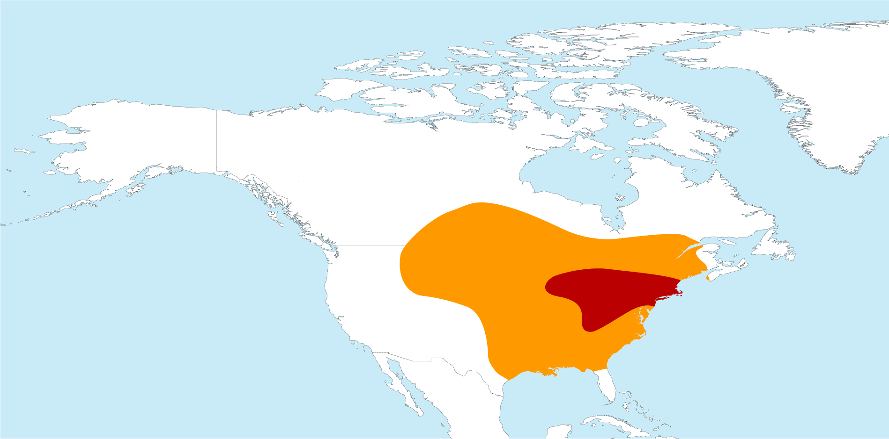
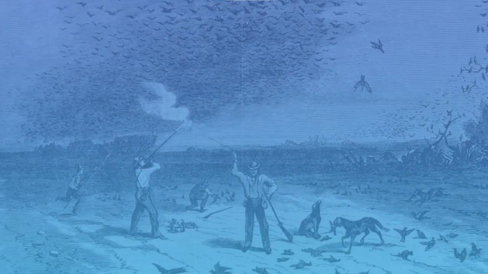

The traveling pie1, migrating pigeon or traveling dove (Ectopistes migratorius) is a
species of birds, now extinct.
The traveler pie was present in very large numbers on the North American continent at the beginning of
the nineteenth century (a species endemic to this continent), its numbers being estimated at three or even five billion
individuals, according to some estimates2, in the States alone. from Indiana , Ohio and Kentucky .
The species was wiped out in just a few decades mainly by farmers who considered it harmful to their crops3.
Zoologist Albert Hazen Wright reported in 1914 that the very last representative of the species,
a female named Marta, died in her cage at the Cincinnati Zoo in Ohio on September 1 of the same year4,5,6.
The traveling pie is quite different from most other pigeons. From 32 to 40 centimeters7,8,
its aerodynamic body is nicely designed, with a small head and long, pointed wings and tail.
This silhouette allowed the bird to fly quickly and with agility. [Style too lyrical or dithyrambic]
Naturalized traveler pie
The bill is black, the legs red. The upperparts are bluish gray, with metallic sheen on the neck. The chest and upper belly are orange-red, and the lower belly and undertail are white.
In Canada, the pie was abundant in the southeast of the country and has historically been seen in seven
provinces of the country: Quebec, Ontario, Saskatchewan, Manitoba, Prince Edward Island,
New Brunswick and Nova Scotia

For thousands of years, Native Americans have hunted these birds without endangering the species.
There were so many traveling pies that it probably seemed unthinkable that the species would ever become extinct.
But the compact and spectacular flights offered by these birds made them especially exposed and vulnerable when settlers and their descendants began to hunt them.
It was indeed very easy to reach these birds: all you had to do was point a gun at the sky and squeeze the trigger blindly and repeatedly. Hunting competitions were organized, one of which offered a reward to hunters who killed more than thirty thousand birds.
From then on, the number of the migrating pigeon began to collapse.
The year 1878 was the last to provide an important hunting picture of this bird13.
Added to this were the destruction of their settlements by fire, intensive deforestation and natural disasters.
In addition, the migrating pigeons were grouped together so well that the species suffered even more from hailstorms.
With the slaughter of thousands of pigeons,
their detection abilities diminished making it more and more difficult to locate adequate sources of food.
Indeed, the localization of the beech areas requires many pairs of eyes (although the migrating pigeon had an extraordinary view).
The survival of the species revolving around its need to operate in such imposing troops,
its decline was certainly initiated when the numbers fell below a certain threshold (perhaps several tens of millions of individuals all likewise). The birds moved erratically,
in search of rich fruiting bodies of beechnuts, acorns and hazelnuts,
and when an exceptionally good site was located, the birds were attracted in large numbers. But the good sloths and glands occurred irregularly in time and space; the best harvests only occurred every two to five years.
There was some beetle production each year,
but in scattered areas that needed to be located.
The decrease in the number of these birds has also worked against its mode of reproduction. Indeed,
mass reproduction was only possible in large colonies.
By the mid-nineteenth century the species headed for extinction. The decline became apparent during the 1870s when these birds could be observed flying in separate rows,
letting in sunlight, and by the turn of the century the species became extinct in the wild. Only a few individuals survived in captivity.
It appears that the decline was also accelerated by an epizootic of Newcastle disease, a paramyxovirus which attacks the digestive tract and nervous system, and which is known to affect domestic poultry as well as many species of birds. 'wild birds
Attempts to save the species were made, but the bird acclimatized very poorly to life in captivity. The attempts therefore ended in failure.
From 1912, rewards were offered to anyone who could spot a pie in the wild.
There are six specimens in Canada today that were naturalized before the extinction of the species.
One of these specimens is in a display case at the Cégep régional de Lanaudière in Joliette,
another at the Parc régional de la Rivière-du-Nord in Saint-Jérôme,
another at the Musée régional d'Argenteuil in Saint-André-d'Argenteuil,
another at the Canadian Museum of Nature,
another at the Redpath Museum in Montreal and another in the collection of Père Arnaud of the Société historique de la Côte-Nord.
Several copies are presented in collections of French museums: museums of Autun, Bordeaux, Nantes, Orleans, Paris, Lille, etc. In Switzerland,
a copy is presented in the exhibition of the Cantonal Museum of Zoology in Lausanne.
